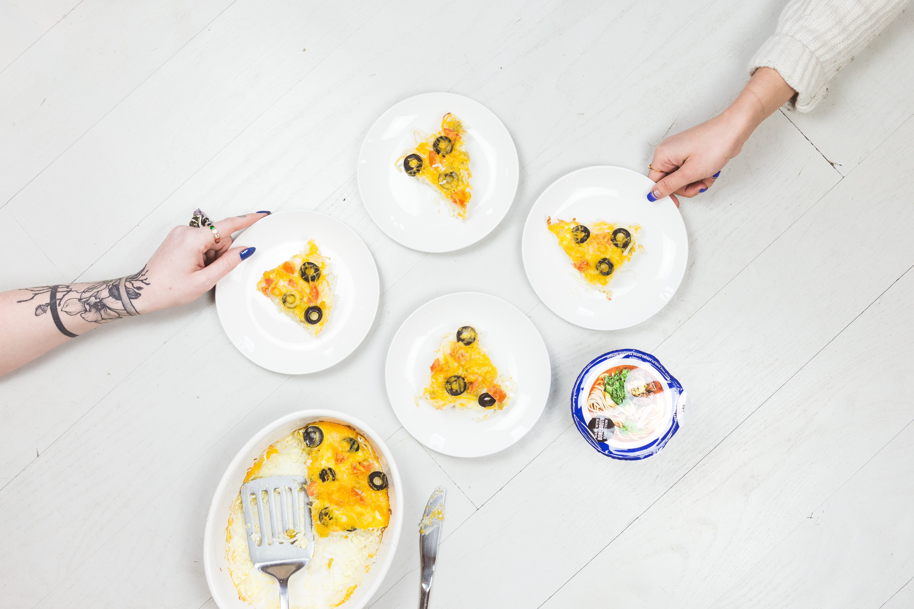

A Unique Culinary Delight!

Description
Plantain Pizza, often simply referred to as 'Plantain',
is a delectable and nutritious dish that brilliantly marries the rich,
sweet flavors of ripe plantain with the savory notes of egg. While its preparation may remind many of the beloved pizza, this dish stands out with its unique blend of ingredients,
offering a wholesome alternative to traditional pizza varieties. The layering of the ripe plantain base with toppings evokes the familiar pizza aesthetic, but with an unmistakable tropical twist.
Often hailed for its health benefits, this innovative dish not only tantalizes the taste buds but also nourishes the body, making it a favorite choice for those seeking both flavor and nutrition.